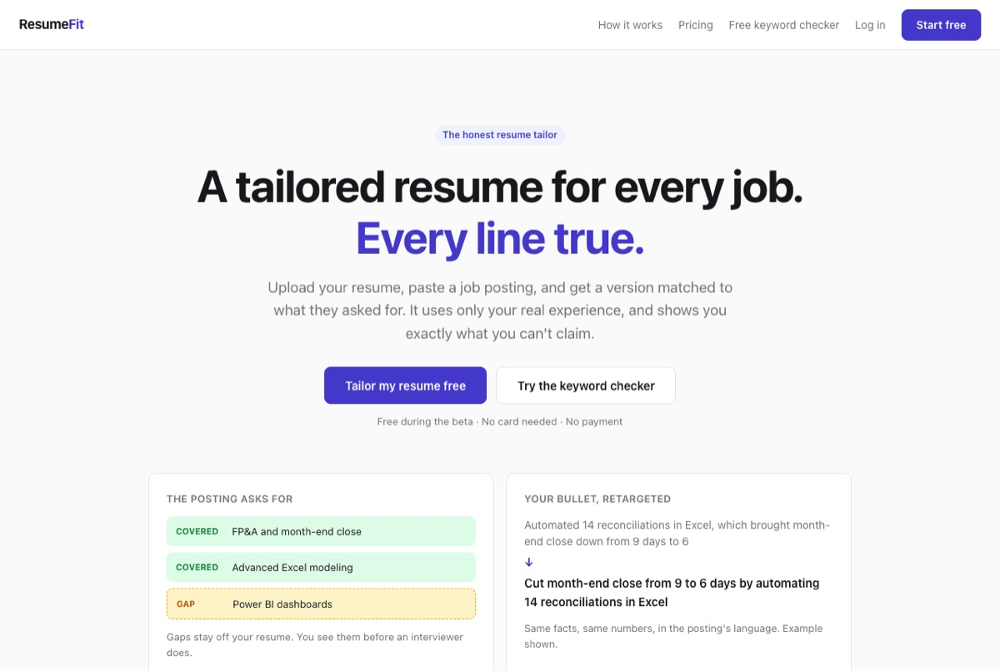
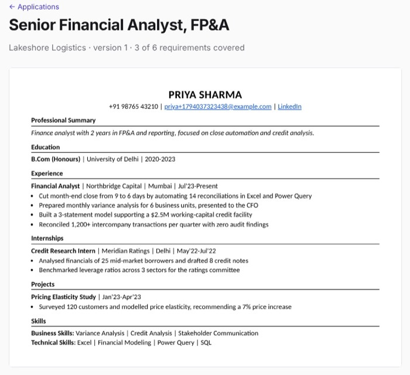

I build products and run programmes where the problem is still unclear.
Looking for a Summer 2027 internship (March to May 2027) in Founder's Office, strategy, consulting, operations or product. Three pieces of work to start with:
I build products and run programmes where the problem is still unclear.
Looking for a Summer 2027 internship (March to May 2027) in Founder's Office, strategy, consulting, operations or product. Three pieces of work to start with:
01 · ResumeFit · Nov 2026 ResumeFit: a resume tool that cannot invent
ResumeFit is live. You upload a resume, paste a job posting, and it rebuilds the resume around that posting using only what you have actually done, then lists the requirements you cannot honestly claim.
I designed it and built it end to end with Claude: PDF and Word import, a match report, five templates, an application tracker, and a check that throws out any AI-written line whose skill, title or number is not in your profile.
AI resume tools sound impressive by adding things you do not have, and you find out in the interview.

ResumeFit home page, captured 24 Nov 2026 (free beta)Case study: ResumeFit: a resume tool that cannot invent
Case study
ResumeFit: a resume tool that cannot invent
Role
Founder and builder
Built with
Claude (AI-assisted development)
Status
Live, free during the beta
ResumeFit is a live web app that rebuilds a resume around one job posting using only what the user has done, and reports the requirements they cannot honestly claim. I designed it, built it with Claude, and launched it on Product Hunt in November 2026.
What I built
Sign-up with email confirmation, PDF and Word resume import into a structured profile, a tailoring pipeline, a match report, five resume templates with layout controls, chat refinement, an application tracker, and a free keyword checker that needs no account.
I built it through AI-assisted development with Claude.
The rule, enforced three times
The prompt lets the model cite only fact ids it was given, and every number must appear in a cited fact.
A validator drops bullets without valid citations, restores your own wording when a number was invented, removes skills that are not in your profile, and turns unsupported matches into gaps.
The database re-checks every citation before a version is saved.
From the project README. The repository is private, so this is documented, not publicly inspectable.
Product Hunt launch graphic with sample text. It illustrates the rule; it is not a real user's resume.

The app's resume view with a fictional profile and test data, captured before the free beta.
The pricing decision
7 NovFirst commit. A $4, 30-day pass was part of the design.
About 12 NovProduct Hunt launch. My maker comment said one free preview, then $4 for 30 days, no subscription.
14 NovCommit: pause payments, everything free for now.
24 NovLive site: everything free during the beta, with fair-use limits.
The $4 pass did not convert, so I paused payments and made the product free to learn from real use. The reason is as I stated in my LinkedIn post; the dates come from the repository history and the live pages.
What I learned
Shipping was the easy half. Whether people need it is the open question, and the free beta exists to answer it. I do not have traction numbers worth quoting yet, and a Product Hunt listing shows that it shipped, not that it works as a business.
02 · Saathi · 2026 Saathi: one shared record for a parent's care
Saathi won Tetr LaunchLab and its US$300 cash prize.
I built the first version in Lovable as an AI tool that extracts data from documents for elder care, then rebuilt the idea as a Phase 1 prototype: family spaces with owner, editor and viewer roles, a medicine list, and a review-and-confirm step before any extracted value is saved.
It is built for families who manage a parent's care from another city or country. It is a prototype with demo data, not a launched product.
03 · Careers Club · 2026 Careers Club: 40 events in five months
During my term as elected Vice President, the Careers Club delivered 40 events in 5 months across 13 clubs on a ₹25 lakh budget, including three full-day hackathons (two on AI) and 400,000+ impressions.
I was elected to the role, and I also served on the Growth Team in the Director's Office, where I designed strategies for organising hackathons for the Bharat Builders Prize.
That prize is a national, three-round AI competition with a ₹10 lakh winner's prize.
Case study: Careers Club: 40 events in five months
Case study
Careers Club: 40 events in five months
Role
Elected Vice President; Growth Team intern
Where
Masters' Union, Gurugram
During my term as elected Vice President, the Careers Club delivered 40 events in 5 months across 13 clubs on a ₹25 lakh budget, including three full-day hackathons (two on AI), and generated 400,000+ impressions.
40events in 5 months
13clubs
3full-day hackathons, 2 on AI
400,000+impressions
₹25 lakhbudget
Figures as listed on my resume. The event pages are not public.
What I did
I was elected to the Vice President role. Separately, I served on the Growth Team in the Director's Office for the Bharat Builders Prize, a national, three-round AI competition with a ₹10 lakh winner's prize, where I designed strategies for organising hackathons.
I was also Lead Organiser of Prompts to Profit, an AI hackathon that drew 412 unique registrants across 236 teams and 86 organisations. Those are the event's totals, delivered by an organising team, not a personal result.
Whose numbers these are
The 40 events, 13 clubs, budget and impressions describe what the club delivered during my term, with a student team. They do not measure my individual contribution, which I would rather walk you through than assert here.
04 · Akshaya Patra · Jun 2024 Akshaya Patra: tracking 700+ assets with QR
I built a QR asset-tracking automation that The Akshaya Patra Foundation adopted. I projected it would save 120+ staff-hours a year; that figure is a projection, not a measured saving.
As Operations Intern in Ahmedabad, I first verified 700+ assets worth ₹20+ crore by reviewing the foundation's operational inventory, then built the AI-enabled QR system around that list.
The inventory had to be verified before it could be tracked, and the QR system is what keeps it tracked.
05 · NITI Aayog · Aug to Oct 2024 NITI Aayog: why pulse prices swing
I diagnosed a cobweb price cycle in India's pulses market and recommended a stable, multi-year trade policy with periodic reviews and strategic reserves.
As Policy Research Intern in New Delhi, I analysed 15 years of production, import and price data, including ₹28,523 crore of peak imports and landed price against MSP, and linked CPI swings from +25% in 2014 to -19% in 2016 to reactive trade curbs.
Pulse prices kept swinging, and trade policy reacted to each swing instead of smoothing it. This was internship research; adoption of the recommendation is not claimed.
Case study: NITI Aayog: why pulse prices swing
Case study
NITI Aayog: why pulse prices swing
Role
Policy Research Intern
When
Aug to Oct 2024, New Delhi
Status
Completed internship
I diagnosed a cobweb price cycle in India's pulses market and recommended a stable, multi-year trade policy with periodic reviews and strategic reserves to stabilise prices.
15 yearsof production, import and price data
₹28,523 crorepeak imports
+25% to -19%CPI swing, 2014 to 2016
Figures as listed on my resume. The dataset belongs to the project and is not published.
What I did
I analysed 15 years of production, import and price data, set landed price against MSP, and traced how CPI swings from +25% in 2014 to -19% in 2016 lined up with reactive trade curbs. From that I recommended a stable, multi-year trade policy, reviewed periodically and backed by strategic reserves.
Concept diagram I drew to explain the mechanism. It is an illustration, not NITI Aayog data.
The problem
A high price pushes farmers to plant more and pushes government toward import relief. A glut follows and prices fall. Farmers cut back, supply tightens, and the cycle repeats. When trade curbs react to each swing, they can feed the cycle instead of damping it.
What I do not claim
This was internship research. I do not claim the recommendation was adopted. A completion letter dated 27 Dec 2024 exists, but it carries personal contact details and is not published until a redacted copy exists.
06 · Field notes · 2023 to 2025 Field notes: how I run things off-campus
I have run three projects where the plan meets the ground: Shodh Yatra, a 140-km expedition across 12 villages; TEDxIIS, the institute's first TEDx, for 250+ attendees; and Jagriti Yatra, an 8,000-km entrepreneurship journey I joined on a ₹70,000 scholarship.
As Shodh Yatra's Project Lead I coordinated logistics with the district administration and police and ran a ₹3 lakh rural-innovation programme with 20+ stakeholder engagements, then presented the learnings at ICCG 5, IIM Ahmedabad. For TEDxIIS I secured the TED licence and led a 30-member team.
Shodh Yatra was SRISTI's 51st, in Nagaur in June 2024; TEDxIIS was in December 2023. Resume only: a self-funded solo trip through all 28 Indian states on ₹80,000.
Presenting Shodh Yatra learnings at ICCG 5, IIM Ahmedabad, January 2025
07 · Harvard and IIFT · 2025 to 2026 Harvard and IIFT: competing outside the classroom
I won Round 1 of the HPAIR Impact Challenge at Harvard in February 2025 with a financial model for a Nairobi slum school, against delegates from 40+ countries. My team placed 3rd among 100+ B-school teams at The Policy Gazette 2026, hosted by IIFT Delhi, analysing AI policy issues for Praxis.
I crowdfunded the cost of attending HPAIR after I was selected to go.
HPAIR is a student conference at Harvard. The Policy Gazette is a B-school policy competition.
08 · Next stop · Summer 2027 Bring me a messy, specific problem
I am looking for a Summer 2027 internship, March to May 2027, where I can own one unclear problem inside a Founder's Office, strategy, operations or product team.
If you are hiring, or you have a problem like that, send me the problem and a time that suits you. I will reply with how I would start.
ResumeFit is live. You upload a resume, paste a job posting, and it rebuilds the resume around that posting using only what you have actually done, then lists the requirements you cannot honestly claim.
I designed it and built it end to end with Claude: PDF and Word import, a match report, five templates, an application tracker, and a check that throws out any AI-written line whose skill, title or number is not in your profile.
AI resume tools sound impressive by adding things you do not have, and you find out in the interview.
ResumeFit home page, captured 24 Nov 2026 (free beta)
Saathi won Tetr LaunchLab and its US$300 cash prize.
I built the first version in Lovable as an AI tool that extracts data from documents for elder care, then rebuilt the idea as a Phase 1 prototype: family spaces with owner, editor and viewer roles, a medicine list, and a review-and-confirm step before any extracted value is saved.
It is built for families who manage a parent's care from another city or country. It is a prototype with demo data, not a launched product.
During my term as elected Vice President, the Careers Club delivered 40 events in 5 months across 13 clubs on a ₹25 lakh budget, including three full-day hackathons (two on AI) and 400,000+ impressions.
I was elected to the role, and I also served on the Growth Team in the Director's Office, where I designed strategies for organising hackathons for the Bharat Builders Prize.
That prize is a national, three-round AI competition with a ₹10 lakh winner's prize.
I built a QR asset-tracking automation that The Akshaya Patra Foundation adopted. I projected it would save 120+ staff-hours a year; that figure is a projection, not a measured saving.
As Operations Intern in Ahmedabad, I first verified 700+ assets worth ₹20+ crore by reviewing the foundation's operational inventory, then built the AI-enabled QR system around that list.
The inventory had to be verified before it could be tracked, and the QR system is what keeps it tracked.
I diagnosed a cobweb price cycle in India's pulses market and recommended a stable, multi-year trade policy with periodic reviews and strategic reserves.
As Policy Research Intern in New Delhi, I analysed 15 years of production, import and price data, including ₹28,523 crore of peak imports and landed price against MSP, and linked CPI swings from +25% in 2014 to -19% in 2016 to reactive trade curbs.
Pulse prices kept swinging, and trade policy reacted to each swing instead of smoothing it. This was internship research; adoption of the recommendation is not claimed.
I have run three projects where the plan meets the ground: Shodh Yatra, a 140-km expedition across 12 villages; TEDxIIS, the institute's first TEDx, for 250+ attendees; and Jagriti Yatra, an 8,000-km entrepreneurship journey I joined on a ₹70,000 scholarship.
As Shodh Yatra's Project Lead I coordinated logistics with the district administration and police and ran a ₹3 lakh rural-innovation programme with 20+ stakeholder engagements, then presented the learnings at ICCG 5, IIM Ahmedabad. For TEDxIIS I secured the TED licence and led a 30-member team.
Shodh Yatra was SRISTI's 51st, in Nagaur in June 2024; TEDxIIS was in December 2023. Resume only: a self-funded solo trip through all 28 Indian states on ₹80,000.
Presenting Shodh Yatra learnings at ICCG 5, IIM Ahmedabad, January 2025
I won Round 1 of the HPAIR Impact Challenge at Harvard in February 2025 with a financial model for a Nairobi slum school, against delegates from 40+ countries. My team placed 3rd among 100+ B-school teams at The Policy Gazette 2026, hosted by IIFT Delhi, analysing AI policy issues for Praxis.
I crowdfunded the cost of attending HPAIR after I was selected to go.
HPAIR is a student conference at Harvard. The Policy Gazette is a B-school policy competition.
I am looking for a Summer 2027 internship, March to May 2027, where I can own one unclear problem inside a Founder's Office, strategy, operations or product team.
If you are hiring, or you have a problem like that, send me the problem and a time that suits you. I will reply with how I would start.
ResumeFit is a live web app that rebuilds a resume around one job posting using only what the user has done, and reports the requirements they cannot honestly claim. I designed it, built it with Claude, and launched it on Product Hunt in November 2026.
What I built
Sign-up with email confirmation, PDF and Word resume import into a structured profile, a tailoring pipeline, a match report, five resume templates with layout controls, chat refinement, an application tracker, and a free keyword checker that needs no account.
I built it through AI-assisted development with Claude.
The rule, enforced three times
The prompt lets the model cite only fact ids it was given, and every number must appear in a cited fact.
A validator drops bullets without valid citations, restores your own wording when a number was invented, removes skills that are not in your profile, and turns unsupported matches into gaps.
The database re-checks every citation before a version is saved.
From the project README. The repository is private, so this is documented, not publicly inspectable.
Product Hunt launch graphic with sample text. It illustrates the rule; it is not a real user's resume.The app's resume view with a fictional profile and test data, captured before the free beta.
The pricing decision
7 NovFirst commit. A $4, 30-day pass was part of the design.
About 12 NovProduct Hunt launch. My maker comment said one free preview, then $4 for 30 days, no subscription.
14 NovCommit: pause payments, everything free for now.
24 NovLive site: everything free during the beta, with fair-use limits.
The $4 pass did not convert, so I paused payments and made the product free to learn from real use. The reason is as I stated in my LinkedIn post; the dates come from the repository history and the live pages.
What I learned
Shipping was the easy half. Whether people need it is the open question, and the free beta exists to answer it. I do not have traction numbers worth quoting yet, and a Product Hunt listing shows that it shipped, not that it works as a business.
During my term as elected Vice President, the Careers Club delivered 40 events in 5 months across 13 clubs on a ₹25 lakh budget, including three full-day hackathons (two on AI), and generated 400,000+ impressions.
40events in 5 months
13clubs
3full-day hackathons, 2 on AI
400,000+impressions
₹25 lakhbudget
Figures as listed on my resume. The event pages are not public.
What I did
I was elected to the Vice President role. Separately, I served on the Growth Team in the Director's Office for the Bharat Builders Prize, a national, three-round AI competition with a ₹10 lakh winner's prize, where I designed strategies for organising hackathons.
I was also Lead Organiser of Prompts to Profit, an AI hackathon that drew 412 unique registrants across 236 teams and 86 organisations. Those are the event's totals, delivered by an organising team, not a personal result.
Whose numbers these are
The 40 events, 13 clubs, budget and impressions describe what the club delivered during my term, with a student team. They do not measure my individual contribution, which I would rather walk you through than assert here.
I diagnosed a cobweb price cycle in India's pulses market and recommended a stable, multi-year trade policy with periodic reviews and strategic reserves to stabilise prices.
15 yearsof production, import and price data
₹28,523 crorepeak imports
+25% to -19%CPI swing, 2014 to 2016
Figures as listed on my resume. The dataset belongs to the project and is not published.
What I did
I analysed 15 years of production, import and price data, set landed price against MSP, and traced how CPI swings from +25% in 2014 to -19% in 2016 lined up with reactive trade curbs. From that I recommended a stable, multi-year trade policy, reviewed periodically and backed by strategic reserves.
Concept diagram I drew to explain the mechanism. It is an illustration, not NITI Aayog data.
The problem
A high price pushes farmers to plant more and pushes government toward import relief. A glut follows and prices fall. Farmers cut back, supply tightens, and the cycle repeats. When trade curbs react to each swing, they can feed the cycle instead of damping it.
What I do not claim
This was internship research. I do not claim the recommendation was adopted. A completion letter dated 27 Dec 2024 exists, but it carries personal contact details and is not published until a redacted copy exists.